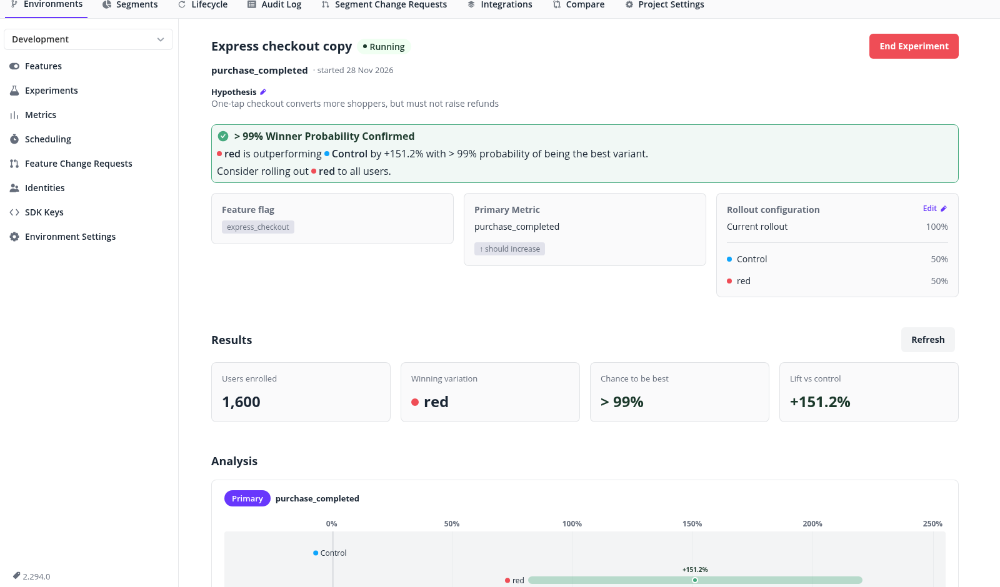

Toggle Wars / Track 03
Refused
A release is not one experiment. One case can refuse it.
Docket reads every experiment in a release, audits the wiring, and signs the decision. This two-case release stayed refused and wrote nothing.
Release docket
checkout-nov-2026
27 Nov 2026Development
Refused
16
Checkout CTA
Winner
+127.2% / interval clears zero / 11 checks pass
17
Express checkout
Guardrail
+151.2% primary / refunds +205.4% to +1,189.0%
Audit fixture
18 / broken wiring / 3 blocks / not in this release
16 / Checkout CTA / Winner
17 / Express checkout / Guardrail
Release / Blocked / Exit 2
Nothing written
Case 16 / Checkout CTA
Winner
+127.2%
Eleven checks pass. The interval clears zero. This case would clear on its own.
Open the generated report ↗
Case 16 Clears
+71.0% +127.2% +183.4%
Chance to win 100.0%
Shoppers 1,600
Audit 11 pass
Exit 0
Case 17 / Express checkout
Guardrail
+151.2%
The primary metric wins. Refunds move the wrong way. This is the case that refuses the whole release.
Open the generated report ↗
Refund guardrail Regressed
+1,189.0%
upper interval / tolerance 0.0% / exit 2
Primary lift +151.2%
Primary interval +81.7% to +220.7%
Refunds +205.4% to +1,189.0%
Case result Refuses
Fixture 18 / Broken wiring
3 blocks
3
The audit stops the experiment before statistics matter. A keyless variation, a misspelled event, a cloud events URL on a self-hosted instance.
Open the generated report ↗
Audit / experiment 18 3 blocks
BLOCK variant keys 1 variation has no key: red
BLOCK metric events purchase_complete never arrived
BLOCK events url points at Flagsmith Cloud
5 checks pass no decision
Release / checkout-nov-2026
Blocked.
One case is enough. Docket pre-validated the mutations and wrote none of them. The release is not a warning; it is a refusal.
Read the cleared record ↗
1 of 2
Cleared
Exit 2
16
17
18
Release
The record
Only a cleared release writes one.
This record is from a cleared one-case release. The two-case release above never wrote a flag. Edit a lift, an interval, an experiment id or a mutation and verification fails.
checkout-nov-2026
Aggregate cleared / exit 0
Experiments 1
Winner red / 100%
Signature hmac-sha256 / 1db834ae297b
Ledger 1 record / 0 invalid
release.json Copy
{
"release": "checkout-nov-2026",
"aggregate": { "state": "cleared", "exit_code": 0 },
"experiments": [
{ "id": 13, "verdict": { "state": "winner", "winner": "red" } }
],
"signature": { "alg": "hmac-sha256", "key_id": "1db834ae297b" }
}
verify docket verify release.json
The source
Delete Flagsmith and there is nothing to decide.
The experiment results are the evidence. The wiring is the audit. The feature state is the release. Docket reads all three from the Flagsmith API and writes the winner back through the same API.
Results GET /experiments/{id}/results/
Wiring GET /warehouse-connections/{id}/events/
Mutation POST /experiments/{id}/complete/
Evidence

The Express experiment in Flagsmith at the same moment. Docket reads the result; it does not replace the platform.
Install
One command. Every case.
Self-hosted Flagsmith, two live experiments, a sample shop, and a release docket with a deliberately broken fixture. No account. No hosted service.
Docker Compose and Python 3.11+. If port 8080 is taken, run DOCKET_PORT=8088 make demo.
CLI
Action
Docker
Terminal Copy
git clone https://github.com/LangerSword/docket
cd docket
make demo
docket --config demo/docket.release.toml release check
docket --config demo/docket.release.toml release ship --confirm --sign
GitHub Actions Copy
- uses: LangerSword/docket/action@v1
with:
token: ${{ secrets.DOCKET_TOKEN }}
env: ${{ vars.FLAGSMITH_ENV }}
experiment: 16
Docker Copy
docker compose up -d
make seed
make load
make demo
Known limits
What it does not do yet.
Post-ship Once a winner is live, Docket does not watch the guardrail or roll it back.
Next Hosted console The browser console at /app is the next surface. Today the product is the CLI and the Action.
Next Token scope Docket needs the Flagsmith Admin API. Use a dedicated token and revoke it when the release is done.
Known
Next: /app console, post-ship guard, policy as code. Read the roadmap ↗